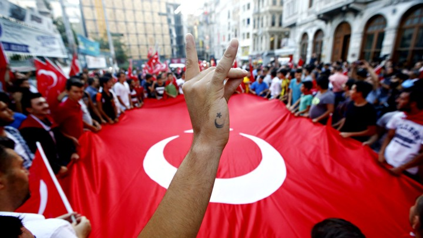

We've discussed the current situation within Turkey, the history regarding the press, those who are affected by the crackdown on publications and journalists imprisoned. The question, despite there being many questions left to ask- what is in store for the future of Turkey?
Turkey is still a topic that press outlets throughout the world are focussing and reporting on, despite the failed coup attempt being back in 2016. With Turkey being a topic that is it that journalists outside of Turkey can do to support journalists still pursuing their careers, and even those in prison?
With all of the experience and situations that Zeynep has encountered, to ask a Turkish journalist how they feel towards the future, how to push forward and what others can do to help only felt right.
"If all of the Turkish journalist's from all sides can’t come together and talk about their involvement in destroying Turkish journalism, there is no way out. This is how I feel. But this is how I feel for all journalists; instead of talking in self-important terms about how great journalism is we need to start a movement to radically re-think our roles and what we did in the past and how we can move forward in today’s world."
Despite the hardships that Turkish journalist's are facing, Zeynep has faith for the press of Turkey, saying that "this repression is not forever and the government will one day go", but the real challenge will be "to gather back what has been lost.
"How do we recover from this once the dust settles? What’s going to Turkish journalism then? How do we mend the profession that has been so politicised and destroyed? I want us to move to that point mentally to think about these things already. Because I think I’ll see in my lifetime that the AKP government will fall."

As for what other journalists from the outside can do, Zeynep highlights how the biggest issue is the lack of funds, but "this is something donors should be thinking about more". For foreign journalists to help Turkish journalists, Zeynep suggests that a good way would be to collaborate with these Turkish journalists in stories, providing vital resources as well as a back-up if they get into travel. On the other hand, this has its own practical challenges.
"It is not easy to find reporters that’d do investigative reporting to international standards. The language is an issue. But if these are passed and if a collaboration could be done with skilled reporters, the benefits could be immense."
But similar to Craig Shaw's explanation on the situation, solidarity for Turkish reporters is highly important. However, Zeynep doesn't believe outside pressure is enough to change things, however journalists outside should do their best to "to keep highlighting these issues even if it is just to be on the right side of history and nothing else".